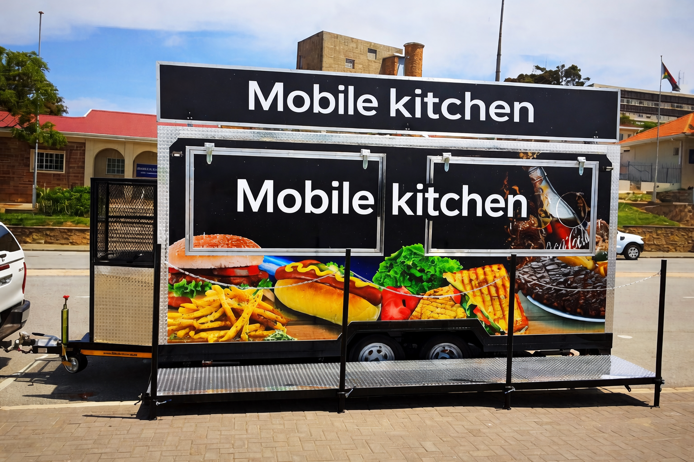

The best Mobile kitchen
A mobile kitchen is a portable cooking space that can be moved from one place to another to prepare and sell food. It is commonly found in food trucks, trailers, or temporary stalls at events, schools, and busy streets. Mobile kitchens are popular because they are flexible and cost less money to start compared to a traditional restaurant. They allow business owners to reach different customers in different locations while offering fresh and convenient meals. Many mobile kitchens also provide fast service, making them suitable for people with busy lifestyles. Mobile kitchens play an important role in creating employment opportunities and supporting small businesses. They can be used to sell a variety of foods such as burgers, sandwiches, traditional meals, and snacks. Business owners can test new food ideas and adapt their menus according to customer preferences. In addition, mobile kitchens are useful at festivals, markets, and community gatherings where temporary food services are needed. Despite challenges such as limited space and weather conditions, mobile kitchens continue to grow in popularity because of their convenience, affordability, and ability to bring food closer to customers.
